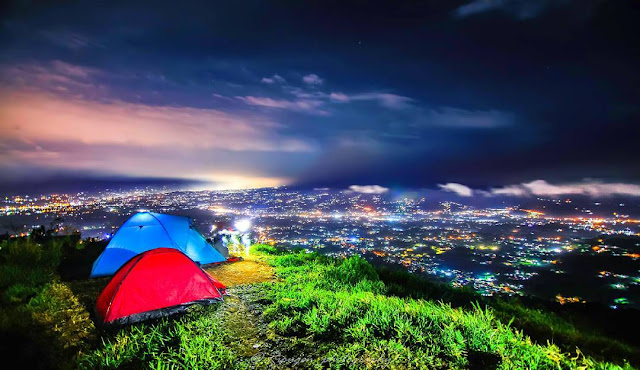
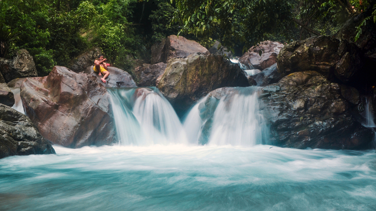
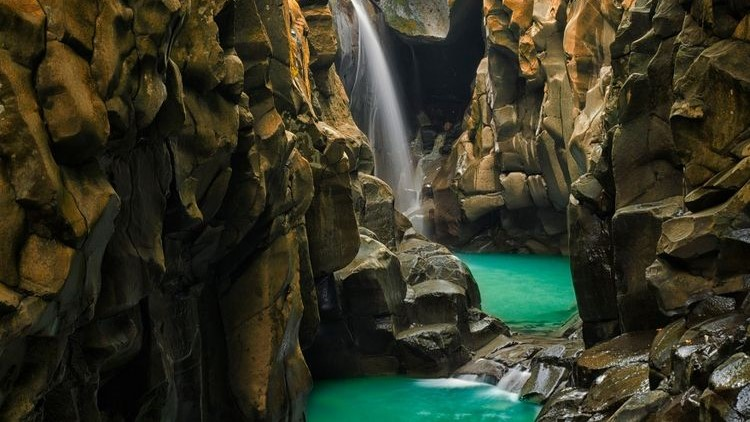
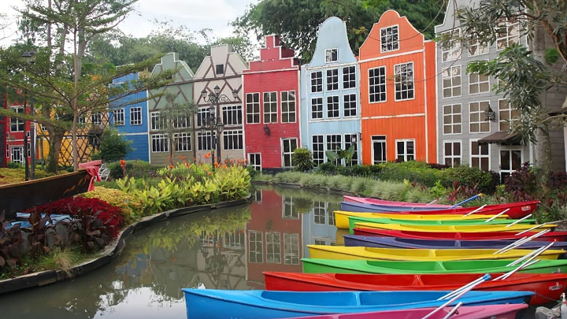

Artikel
Rekomendasi Tempat Wisata di Bogor
Bogor dikenal sebagai daerah yang asri dan sejuk. Jaraknya hanya sekitar 60 kilometer dari Kota Jakarta membuat Bogor sebagai salah satu destinasi wisata yang paling banyak dikunjungi terutama bagi warga Jakarta dan sekitarnya. Berikut ini beberapa rekomendasi tempat wisata yang ada di Bogor.
Bukit Alesano
Bukit Alesano merupakan tempat wisata yang menawarkan sensasi berkemah di ketinggian bukit dengan dikelilingi pemandangan kota Bogor yang indah di malam hari. Tidak kalah menakjubkan, pengunjung juga bisa menikmati matahari terbit dengan pemandangan Gunung Salak dan Gunung Pangrango yang terlihat sangat cantik dari atas bukit Alesano. Tempat wisata ini terletak di kaki Gunung Salak di Desa Cipelang, Kecamatan Cijeruk, Kabupaten Bogor.
Curug Leuwi Hejo
Keindahan Curug Leuwi Hejo membuatnya sering disebut sebagai Green Canyon ala Bogor. Terletak di Desa Cibadak, Kec. Sukamakmur, Kabupaten Bogor, Curug Leuwi Hejo menjadi lokasi wisata yang banyak dikunjungi karena suasananya yang sejuk nan asri. Adanya pegunungan batu di sekitarnya, membuat Curug Leuwi Hejo tampak megah. Curug Leuwi Hejo juga dikelilingi beberapa curug dengan keindahannya masing-masing, yaitu Curug Leuwi Lieuk, Curug Leuwi Ciung, Curug Leuwi Cepet, dan Curug Baliung.
Situ Rawa Gede

Terletak di Desa Sirnajaya, Kecamatan Sukamakmur, Kabupaten Bogor, Situ Rawa Gede punya hawa sejuk dengan pemandangan perairan yang menenangkan. Berlokasi cukup jauh dari jalan raya membuat suasana Situ Rawa Gede cukup hening. Pemandangannya pun tak kalah memesona, perpaduan rawa dan bukit membentuk lanskap yang menakjubkan.
Curug Cikuluwung
Curug Cikuluwung merupakan curug yang berada di kawasan Desa Cibitung Wetan, Kecamatan Pamijahan, Kabupaten Bogor, Jawa Barat. Letaknya berada di wilayah pedalaman dan akses menuju ke lokasi utamanya pun terbilang cukup sulit. Curug ini menjadi hits setelah keindahannya terekspos dan membuat orang penasaran. Sebab, curug memiliki keindahan dan keunikan tersendiri. Hal yang menjadi daya tarik curug ini adalah airnya yang jernih kebiru-biruan serta lokasinya yang berada di antara tebing bebatuan alami yang sangat elok. Batuan tebing tersebut tampak rapi seakan disusun mengelilingi curug ini. Maka tidak heran jika air terjun ini mendadak hits karena pesonanya yang sangat memukau dan Instagramable.
Devoyage
Devoyage Bogor berlokasi di Bogor Nirwana Residence, Jalan Indigo Raya, Kelurahan Mulyaharja, Kecamatan Bogor Selatan, Kota Bogor. Devoyage terkenal akan berbagai spot foto ala Eropa, seperti miniatur dari berbagai landmark negara-negara Eropa yang cocok dijadikan tempat untuk berswafoto seperti menara eiffel, kincir angin, dan lain-lain.